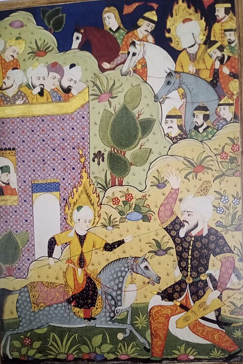

بِسْمِ اللهِ الرَّحْمَٰنِ الرَّحِيمِ
A Book of Wonders
Jesus / ʿĪsā ibn Maryam — The Messiah
عِيسَى ابْنُ مَرْيَمَ

Physical Description
Isā ibn Maryam is a Prophet of God. He is of average height, with reddish-white skin and a broad chest. His hair is straight, appearing as though it is dripping with water even when it is not wet at all. He will come down at the white minaret in the east of Damascus, wearing two garments dyed with safflower and saffron, resting his hands on the wings of two angels. (ʿArīfī, The End of the World, p. 348.)
Lore & Significance
The return of ʿĪsā ibn Maryam (peace be upon him) is the second sign of the major events of the end of times. He was born of a virgin birth from Maryam (peace be upon her), spoke in the cradle, and God took him up before he was crucified. In many ways, Isa (peace be upon him)'s story represents the power of God; His miraculous birth, ability to heal the sick, and rise to the heavens signify that God can do as he wills, even outside of human comprehension (ʿArīfī, The End of the World, p. 337).
He will descend in Damascus, break the cross, kill the pigs, abolish the jizyah, and cause mutual hatred and envy to disappear. The idea that ʿĪsā will destroy the cross is deeply significant: he will fundamentally destroy the central symbol of Christianity, and while Christians believe him to be the Messiah, he will himself reject the idea that he is the Son of God. He will pray behind the Mahdī, signifying the unity of the Muslim ummah and confirming that ʿĪsā himself is Muslim.
He will then pursue and kill the Dajjāl; When the Dajjāl sees him, he will begin melting as salt melts in water. ʿĪsā will chase him and catch up with him at the gate of Ludd (in Palestine) and kill him with a spear. The trees, rocks, and mud will tell him where the followers of the Dajjāl are hiding — all except the Gharqad tree (box thorn), which is of their company. The role of everyday plants and natural items as allies of Prophet Isa (peace be upon him) represent the greater belief in Islam that everything worships Allah (The most glorified, the most high). Everything is under His control, except that which He commands to stand apart. The trees and rocks crying out against the enemies of truth are a sign that the entire created order is aligned with divine justice. (ʿArīfī, The End of the World, pp. 309–310.)